Action
An action game is a video game genre that emphasizes physical challenges, including hand–eye coordination and reaction time. The genre includes a large variety of sub-genres, such as fighting games, beat 'em ups, shooter games, rhythm games and platform games. Multiplayer online battle arena and some real-time strategy games are also considered action games.
In an action game, the player typically controls a character often in the form of a protagonist or avatar. This player character must navigate a level, collecting objects, avoiding obstacles, and battling enemies with their natural skills as well as weapons and other tools at their disposal. At the end of a level or group of levels, the player must often defeat a boss enemy that is more challenging and often a major antagonist in the game's story. Enemy attacks and obstacles deplete the player character's health and lives, and the player receives a game over when they run out of lives.
Alternatively, the player gets to the end of the game by finishing a sequence of levels to complete a final goal, and see the credits. Some action games, such as early arcade games, are unbeatable and have an indefinite number of levels. The player's only goal is to get as far as they can, to maximize their score.
Examples:
- Call of Duty series 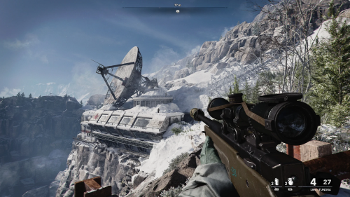
- Devil May Cry series 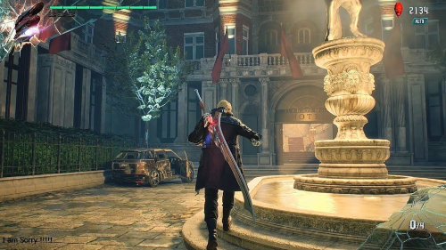
- God of War Series 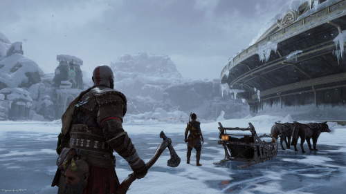
Adventure
An adventure game is a video game genre in which the player assumes the role of a protagonist in an interactive story, driven by exploration and/or puzzle-solving.[1] The genre's focus on story allows it to draw heavily from other narrative-based media, such as literature and film, encompassing a wide variety of genres. Most adventure games (text and graphic) are designed for a single player, since the emphasis on story and character makes multiplayer design difficult.[2] Colossal Cave Adventure is identified by Rick Adams[3] as the first such adventure game, first released in 1976, while other notable adventure game series include Zork, King's Quest, Monkey Island, Syberia, and Myst.
Adventure games were initially developed in the 1970s and early 1980s as text-based interactive stories, using text parsers to translate the player's commands into actions. As personal computers became more powerful with better graphics, the graphic adventure-game format became popular, initially by augmenting player's text commands with graphics, but soon moving towards point-and-click interfaces. Further computer advances led to adventure games with more immersive graphics using real-time or pre-rendered three-dimensional scenes or full-motion video taken from the first- or third-person perspective. Currently, a large number of adventure games are available as a combination of different genres with adventure elements.
For markets in the Western hemisphere, the genre's popularity peaked during the late 1980s to mid-1990s when many[quantify] considered it to be among the most technically advanced genres, but it had become a niche genre in the early 2000s due to the popularity of first-person shooters, and it became difficult for developers to find publishers to support adventure-game ventures. Since then, a resurgence in the genre has occurred, spurred on by the success of independent video-game development, particularly from crowdfunding efforts, from the wide availability of digital distribution enabling episodic approaches, and from the proliferation of new gaming platforms, including portable consoles and mobile devices.
Within Asian markets, adventure games continue to be popular in the form of visual novels, which make up nearly 70% of PC games released in Japan.[4] Asian countries have also found markets for adventure games for portable and mobile gaming devices. Japanese adventure-games tend to be distinct, having a slower pace and revolving more around dialogue, whereas Western adventure-games typically emphasize more interactive worlds and complex puzzle solving, owing to them each having unique development histories.
Examples:
- The Legend of Zelda series 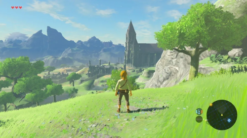
- Monkey Island series 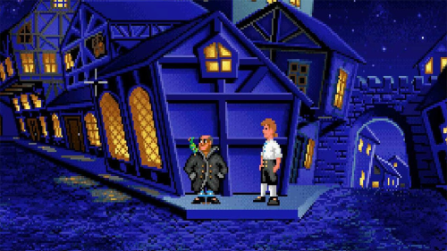
- Life is Strange 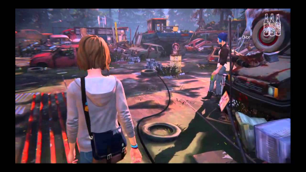
- Grim Fandango 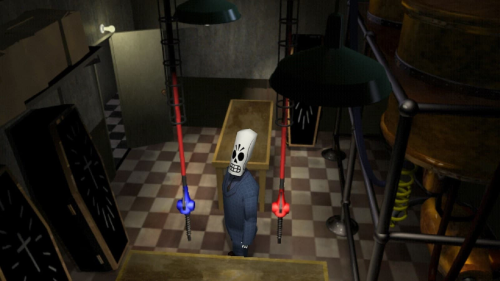
Role-Playing Game (RPG)
A role-playing video game, role-playing game (RPG) or computer role-playing game (CRPG) is a video game genre where the player controls the actions of a character (or several party members) that will undergo some form of character development by way of recording statistics. Also, they are usually immersed in some well-defined world. Many role-playing video games have origins in tabletop role-playing games[1] and use much of the same terminology, settings, and game mechanics. Other major similarities with pen-and-paper games include developed story-telling and narrative elements, player character development, complexity, as well as replay value and immersion. The electronic medium removes the necessity for a gamemaster and increases combat resolution speed. RPGs have evolved from simple text-based console-window games into visually rich 3D experiences.
Role-playing video games use much of the same terminology, settings and game mechanics as early tabletop role-playing games such as Dungeons & Dragons.[2] Players control a central game character, or multiple game characters, usually called a party, that will grow in power and abilities. Also, characters are typically designed by the player.[1] Usually, the characters attain victory by completing a series of quests or reaching the conclusion of a central storyline. Players explore a game world, while solving puzzles and engaging in combat.
Role-playing games are traditionally divided into turn-based RPGs, that rarely challenge a player's physical coordination or reaction time, and action-based RPGs, that do the opposite.
Examples:
- The Witcher 3: Wild Hunt 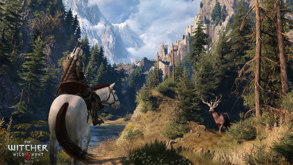
- Final Fantasy series 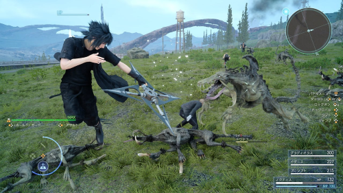
- Dark Souls series 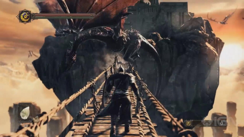
Simulation
Simulation video games are a diverse super-category of video games, generally designed to closely simulate real world activities.[1] A simulation game attempts to copy various activities from real life in the form of a game for various purposes such as training, analysis, prediction, or entertainment. Usually there are no strictly defined goals in the game, and the player is allowed to control a character or environment freely.[2] Well-known examples are war games, business games, and role play simulation. From three basic types of strategic, planning, and learning exercises: games, simulations, and case studies, a number of hybrids may be considered, including simulation games that are used as case studies.[3] Comparisons of the merits of simulation games versus other teaching techniques have been carried out by many researchers and a number of comprehensive reviews have been published.
Construction and management simulation (CMS)[5] is a type of simulation game in which players build, expand or manage fictional communities or projects with limited resources.[6] Strategy games sometimes incorporate CMS aspects into their game economy, as players must manage resources while expanding their projects. Pure CMS games differ from strategy games in that "the player's goal is not to defeat an enemy, but to build something within the context of an ongoing process."[5] Games in this category are sometimes also called "management games".
Some video games simulate the playing of sports. Most sports have been recreated by video games, including team sports, athletics and extreme sports. Some games emphasize playing the sport (such as the Madden NFL series), whilst others emphasize strategy and organization (such as Football Manager). Some, such as Arch Rivals, satirize the sport for comic effect. This genre has been popular throughout the history of video games, and is competitive, just like real-world sports. A number of game series feature the names and characteristics of real teams and players, and are updated continuously to reflect real-world changes.
Examples:
- The Sims series
- Microsoft Flight Simulator
- Animal Crossing: New Horizons 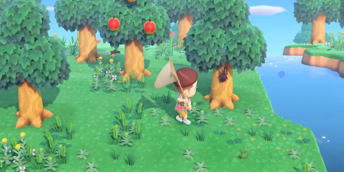
Strategy
Strategy is a major video game genre that focus on analyzing and strategizing over direct quick reaction in order to secure success.[1] Although many types of video games can contain strategic elements, as a genre, strategy games are most commonly defined as those with a primary focus on high-level strategy, logistics and resource management. They are also usually divided into two main sub-categories: turn-based and real-time, but there are also many strategy cross/sub-genres that feature additional elements such as tactics, diplomacy, economics and exploration.
A player must plan a series of actions against one or more opponents, and the reduction of enemy forces is usually a goal. Victory is achieved through superior planning, and the element of chance takes a smaller role.[2] In most strategy video games, the player is given a godlike view of the game world, and indirectly controls game units under their command.[1] Thus, most strategy games involve elements of warfare to varying degrees,[2] and feature a combination of tactical and strategic considerations.[3] In addition to combat, these games often challenge the player's ability to explore or manage an economy.
Even though there are many action games that involve strategic thinking, they are seldom classified as strategy games.[3] A strategy game is typically larger in scope, and its main emphasis is on the player's ability to outthink their opponent.[3] Strategy games rarely involve a physical challenge, and tend to annoy strategically minded players when they do.[2] Compared to other genres such as action or adventure games where one player takes on many enemies, strategy games usually involve some level of symmetry between sides. Each side generally has access to similar resources and actions, with the strengths and weaknesses of each side being generally balanced.
Examples:
- StarCraft II 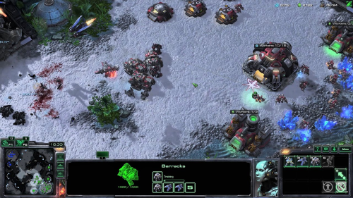
- Civilization VI 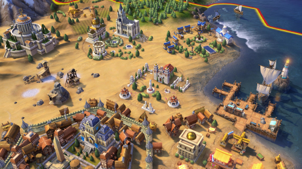
- Age of Empires II 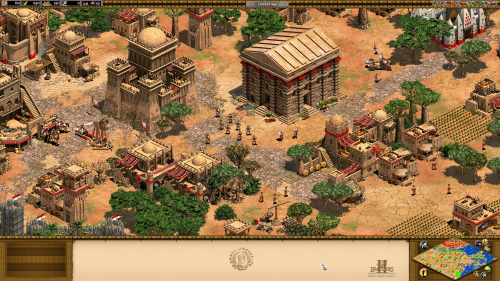
Sports
A sports video game is a video game that simulates the practice of sports. Most sports have been recreated with video games, including team sports, track and field, extreme sports, and combat sports.[1] Some games emphasize playing the sport (such as EA Sports FC, eFootball and NBA 2K), whilst others emphasize strategy and sport management (such as Football Manager and Out of the Park Baseball). Some, such as Need for Speed, Arch Rivals and Punch-Out!!, satirize the sport for comic effect. This genre has been popular throughout the history of video games and is competitive, just like real-world sports. A number of game series feature the names and characteristics of real teams and players, and are updated annually to reflect real-world changes. The sports genre is one of the oldest genres in gaming history.
Sports games involve physical and tactical challenges, and test the player's precision and accuracy.[3] Most sports games attempt to model the athletic characteristics required by that sport, including speed, strength, acceleration, accuracy, and so on.[3] As with their respective sports, these games take place in a stadium or arena with clear boundaries.[3] Sports games often provide play-by-play and color commentary through the use of recorded audio.
Sports games sometimes make use of different modes for different parts of the game. This is especially true in games about American football such as the Madden NFL series, where executing a pass play requires six different gameplay modes in the span of approximately 45 seconds.[3] Sometimes, other sports games offer a menu where players may select a strategy while play is temporarily suspended.[3] Association football video games sometimes shift gameplay modes when it is time for the player to attempt a penalty kick, a free shot at goal from the penalty spot, taken by a single player.[3] Some sports games also require players to shift roles between the athletes and the coach or manager. These mode switches are more intuitive than other game genres because they reflect actual sports.
Examples:
- FIFA series 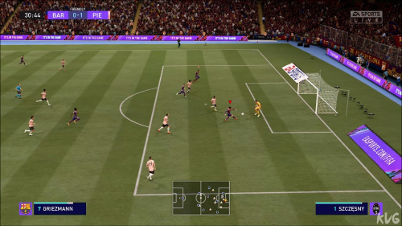
- Madden NFL series 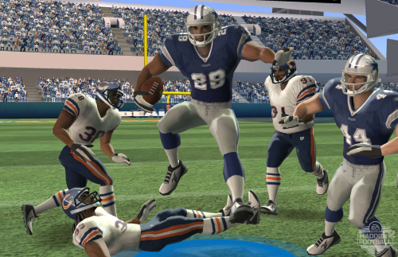
- NBA 2K series 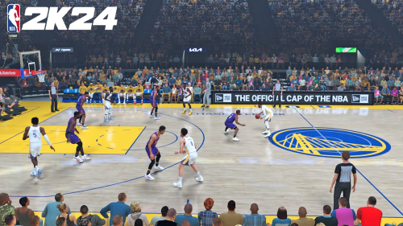
Puzzle
Puzzle video games make up a broad genre of video games that emphasize puzzle solving. The types of puzzles can test problem-solving skills, including logic, pattern recognition, sequence solving, spatial recognition, and word completion. Many puzzle games involve a real-time element and require quick thinking, such as Tetris (1985) and Lemmings (1991).
Puzzle video games owe their origins to brain teasers and puzzles throughout human history. The mathematical strategy game Nim, and other traditional thinking games such as Hangman and Bulls and Cows (commercialized as Mastermind), were popular targets for computer implementation.
Universal Entertainment's Space Panic, released in arcades in 1980, is a precursor to puzzle-platform games such as Lode Runner (1983), Door Door (1983), and Doki Doki Penguin Land (1985).
Blockbuster, by Alan Griesemer and Stephen Bradshaw (Atari 8-bit, 1981), is a computerized version of the Rubik's Cube puzzle.[4] Snark Hunt (Atari 8-bit, 1982) is a single-player game of logical deduction, a clone of the 1970s Black Box board game.
Tetris (1985) revolutionized and popularized the puzzle game genre.[9][10] The game was created by Soviet game designer Alexey Pajitnov for the Electronika 60.[11] Pajitnov was inspired by a traditional puzzle game named Pentominos in which players arrange blocks into lines without any gaps.[9] The game was released by Spectrum Holobyte for MS-DOS in 1987, Atari Games in arcades in 1988, and sold 30 million copies for Game Boy.
Examples:
- Tetris 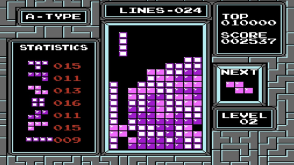
- Portal series 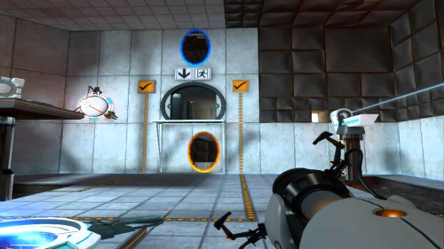
- Candy Crush Saga 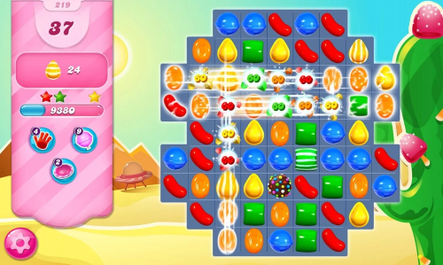
Horror
A horror game is a video game genre centered on horror fiction and typically designed to scare the player. The term may also be used to describe tabletop games with horror fiction elements.
Unlike most other video game genres, which are classified by their gameplay, horror games are nearly always based on narrative or visual presentation, and use a variety of gameplay types.
Historically, the classification of video games into genres ignores the narrative themes, which would include science fiction or fantasy games, instead preferring systems based on the style of gameplay or at times, types of game modes or by platform. Horror games is the only narrative-based classification that has generally not followed this pattern, with the narrative genre label used broadly for games designed to scare players.[1] This broad association to the narrative theme of horror games leads to the lack of well-defined subgenres of horror games. Many gameplay-defined genres have numerous games with horror themes, notably the Castlevania platform game series uses monsters and creatures borrowed from numerous horror mythos. In such cases, these games are still categorized by their original gameplay genre, the horror aspect considered a literary aspect of the game.[3] However, there are some specific areas in the broad horror game classification that have been identified as unique subgenres in horror.
Action horror games use action game elements from first person and third-person shooter games alongside the survival horror themes, making them more fast-paced than survival horror games. These grew in popularity following the release of Resident Evil 4 in 2005 and which persisted in the next two titles, Resident Evil 5 and Resident Evil 6, with gameplay that focused more on action-oriented combat than puzzles and problem-solving from previous titles (Resident Evil 7 returned to the series' survival horror roots).[4][5] Examples of action horror games include The House of the Dead series, the Dead Space series, the Left 4 Dead series, and The Last of Us.
One of the best-defined and most common types of horror games are survival horror games. These games tend to focus on the survival of the player-character in a horror setting with limited resources, and thus tend to be more geared as an action game or action-adventure game.[6] A common theme of these games is escape or survival from the equivalent of a zombie apocalypse, with weapons, ammunition, and armor limited. The Resident Evil series coined the term and serves as the prime example of such games, though key conventions of the subgenre preceded the Resident Evil series. Other notable survival horror series include Alone in the Dark, Clock Tower, Silent Hill, Fatal Frame, and Parasite Eve.
Examples:
- Resident Evil series 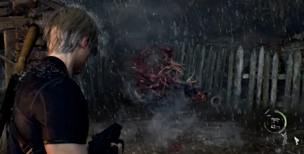
- Silent Hill series 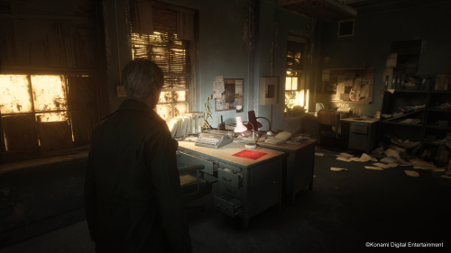
- Phasmophobia
Fighting
The fighting game genre of video games involves combat between multiple characters, often (but not limited to) one-on-one battles. Fighting game combat often features mechanics such as blocking, grappling, counter-attacking, and chaining attacks together into "combos". Characters generally engage hand-to-hand combat, often with martial arts, but some may include weaponry. Battles are usually set in a fixed-size arena along a two-dimensional plane, where characters navigate the plane horizontally by walking or dashing, and vertically by jumping. Some games allow limited movement in 3D space, such as Tekken and Soulblade while some are set in fully three-dimensional environments without restricting characters' movement, such as Power Stone and Naruto: Ultimate Ninja Storm; these are sometimes referred to as "3D arena" fighting games.
The fighting game genre is distinctly related to the beat 'em up genre, which pits many computer-controlled enemies against one or more player characters. The first video game to feature fist fighting is Heavyweight Champ (1976),[1] but Karate Champ (1984) actually features the one-on-one fighting game genre instead of a sports game in arcades. Yie Ar Kung-Fu was released later that year with various fighting styles and introduced health meters, and The Way of the Exploding Fist (1985) further popularized the genre on home systems. In 1987, Capcom's Street Fighter introduced special attacks, and in 1991, its highly successful sequel Street Fighter II refined and popularized many genre conventions, including combos. Fighting games subsequently became the preeminent genre for video gaming in the early to mid-1990s, particularly in arcades. This period spawned dozens of other popular fighting games, including franchises like Street Fighter, Mortal Kombat, Super Smash Bros., and Tekken.
Fighting games are a type of action game where two (in one-on-one fighting games) or more (in platform fighters) on-screen characters fight each other.[2][3][4][5] These games typically feature special moves that are triggered using rapid sequences of carefully timed button presses and joystick movements. Games traditionally show fighters from a side view, even as the genre has progressed from two-dimensional (2D) to three-dimensional (3D) graphics.[3] Street Fighter II, though not the first fighting game, is considered to have standardized the genre,[6] and similar games released prior to Street Fighter II have since been more explicitly classified as fighting games.[5][6] Fighting games typically involve hand-to-hand combat, though many games also feature characters with melee weapons.[7] Fighting characters are usually based on humans, but there are also games that are entirely based around mecha robot characters, for example the Gundam: Battle Assault series.
Examples:
- Street Fighter series 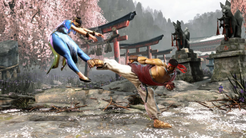
- Mortal Kombat series 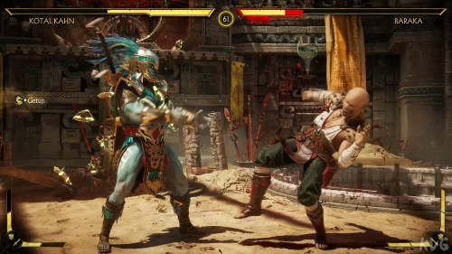
- Tekken series 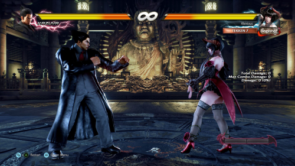
First-Person Shooter (FPS)
A first-person shooter (FPS) is a video game centered on gun fighting and other weapon-based combat seen from a first-person perspective, with the player experiencing the action directly through the eyes of the main character.[1] This genre shares multiple common traits with other shooter games, and in turn falls under the action games category. Since the genre's inception, advanced 3D and pseudo-3D graphics have proven fundamental to allow a reasonable level of immersion in the game world, and this type of game helped pushing technology progressively further, challenging hardware developers worldwide to introduce numerous innovations in the field of graphics processing units. Multiplayer gaming has been an integral part of the experience, and became even more prominent with the diffusion of internet connectivity in recent years.
Although earlier games predate it by 20 years, Wolfenstein 3D (1992) was the highest-profile archetype upon which most subsequent first-person shooters were based. One such game, considered the progenitor of the genre's mainstream acceptance and popularity, was Doom (1993), often cited as the most influential game in this category; for years, the term "Doom clone" was used to designate this type of game, due to Doom's enormous success.[2] Another common name for the genre in its early days was "corridor shooter", since processing limitations of that era's computer hardware meant that most of the action had to take place in enclosed areas, such as corridors and small rooms.
During the 1990s, the genre was one of the main cornerstones for technological advancements of computer graphics, starting with the release of Quake in 1996. Quake was one of the first real-time 3D rendered video games in history, and quickly became one of the most acclaimed shooter games of all time.[4][5] Graphics accelerator hardware became essential to improve performances and add new effects such as full texture mapping, dynamic lighting and particle processing to the 3D engines that powered the games of that period, such as the iconic id Tech 2, the first iteration of the Unreal Engine, or the more versatile Build. Other seminal games were released during the years, with Marathon enhancing the narrative and puzzle elements,[6][7][8] Duke Nukem 3D introducing voice acting, complete interactivity with the environment, and city-life settings to the genre, and games like Tom Clancy's Rainbow Six and Counter-Strike starting to adopt a realistic and tactical approach aimed at simulating real life counter-terrorism situations. GoldenEye 007, released in 1997, was a landmark first-person shooter for home consoles, while the critical and commercial success of later titles like Perfect Dark, Medal of Honor and the Halo series helped to heighten the appeal of this genre for the consoles market, straightening the road to the current tendency to release most titles as cross-platform, like many games in the Far Cry and Call of Duty series.
Examples:
- Call of Duty series 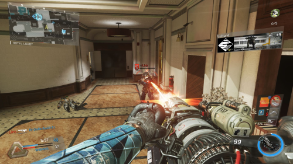
- Halo series 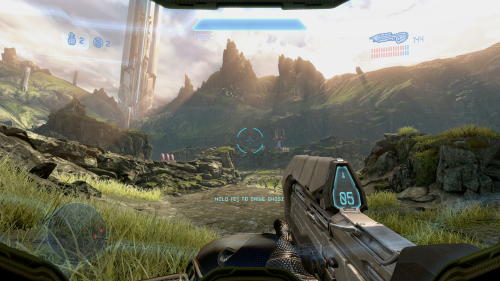
- Valorant 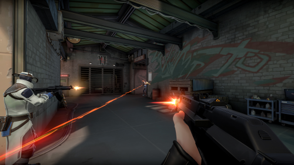
Platformer
A platformer (also called a platform game, and sometimes a jump 'n' run game) is a subgenre of action game in which the core objective is to move the player character between points in an environment. Platform games are characterized by levels with uneven terrain and suspended platforms that require jumping and climbing to traverse. Other acrobatic maneuvers may factor into the gameplay, such as swinging from vines or grappling hooks, jumping off walls, gliding through the air, or bouncing from springboards or trampolines.
The genre started with the 1980 arcade video game Space Panic, which has ladders but not jumping. Donkey Kong, released in 1981, established a template for what were initially called "climbing games". Donkey Kong inspired many clones and games with similar elements, such as Miner 2049er (1982) and Kangaroo (1982), while the Sega arcade game Congo Bongo (1983) adds a third dimension via isometric graphics. Another popular game of that period, Pitfall! (1982), allows moving left and right through series of non-scrolling screens, expanding the play area. Nintendo's flagship Super Mario Bros. (1985) was a defining game for the genre, with horizontally scrolling levels and the player controlling a named character—Mario, which became Nintendo's mascot. The terms platform game and platformer gained traction in the late 1980s.
During their peak of popularity, platformers were estimated to comprise between a quarter and a third of all console games.[2] By 2006, sales had declined, representing a 2% market share as compared to 15% in 1998.[3] In spite of this, platformers are still being commercially released every year, including some which have sold millions of copies.
Examples:
- Super Mario Bros. 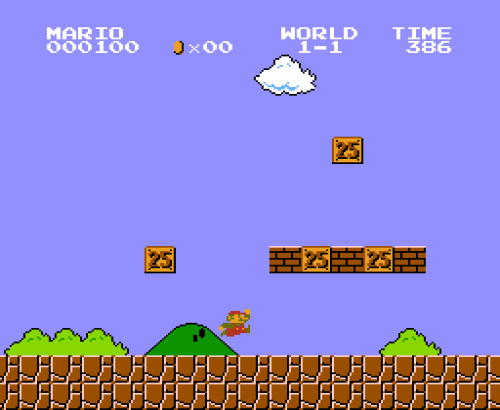
- Celeste 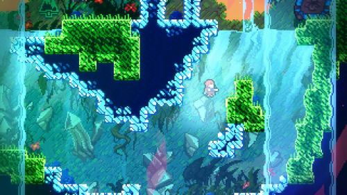
- Kirby Series 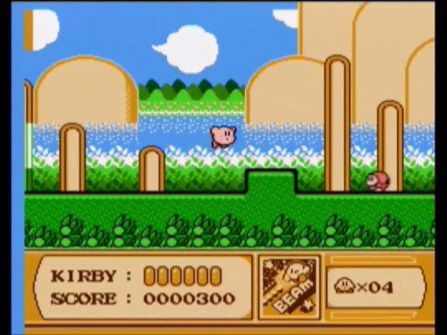
Roguelike/Roguelite
Roguelike (or rogue-like) is a style of role-playing game traditionally characterized by a dungeon crawl through procedurally generated levels, turn-based gameplay, grid-based movement, and permanent death of the player character. Most roguelikes are based on a high fantasy narrative, reflecting the influence of tabletop role-playing games such as Dungeons & Dragons.
Though Beneath Apple Manor predates it, the 1980 game Rogue, which is an ASCII based game that runs in terminal or terminal emulator, is considered the forerunner and the namesake of the genre, with derivative games mirroring Rogue's character- or sprite-based graphics. These games were popularized among college students and computer programmers of the 1980s and 1990s, leading to hundreds of variants. Some of the better-known variants include Hack, NetHack, Ancient Domains of Mystery, Moria, Angband, Tales of Maj'Eyal, and Dungeon Crawl Stone Soup. The Japanese series of Mystery Dungeon games by Chunsoft, inspired by Rogue, also fall within the concept of roguelike games.
The exact definition of a roguelike game remains a point of debate in the video game community. A "Berlin Interpretation" drafted in 2008 defined a number of high- and low-value factors that distinguished the "pure" roguelike games Rogue, NetHack and Angband from edge cases like Diablo. Since then, with more powerful home computers and gaming systems and the rapid growth of indie video game development, several new "roguelikes" have appeared, with some but not all of these high-value factors, nominally the use of procedural generation and permadeath, while often incorporating other gameplay genres, thematic elements, and graphical styles; common examples of these include Spelunky, FTL: Faster Than Light, The Binding of Isaac, Slay the Spire, Crypt of the NecroDancer, and Hades. To distinguish these from traditional roguelikes, such games may be referred to as "rogue-lite" or "roguelike-like". Despite this alternative naming suggestion these games are often referred to as roguelike and use the roguelike tag on various market places such as Steam.
Examples:
- Hades 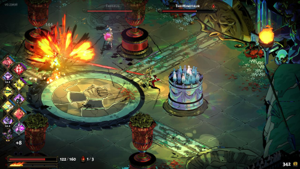
- Dead Cells 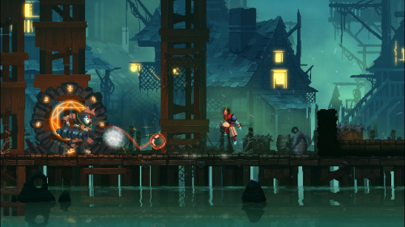
- Dungeons & Dragons 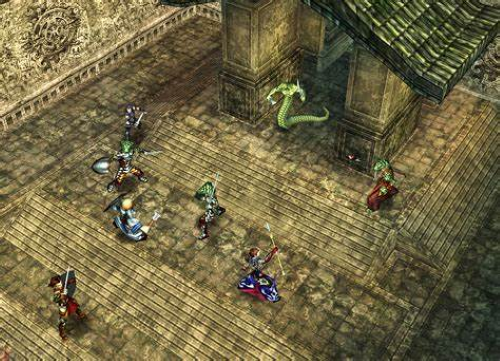
Massively Multiplayer Online (MMO)
A massively multiplayer online game (MMOG or more commonly MMO) is an online video game with a large number of players to interact in the same online game world.[1] MMOs usually feature a huge, persistent open world, although there are games that differ. These games can be found for most network-capable platforms, including the personal computer, video game console, or smartphones and other mobile devices.
MMOs can enable players to cooperate and compete with each other on a large scale, and sometimes to interact meaningfully with people around the world. They include a variety of gameplay types, representing many video game genres.
The most popular type of MMOG, and the subgenre that pioneered the category, is the massively multiplayer online role-playing game (MMORPG), which descended from university mainframe computer MUD and adventure games such as Rogue and Dungeon on the PDP-10. These games predate the commercial gaming industry and the Internet, but still featured persistent worlds and other elements of MMOGs still used today.
The first graphical MMOG, and a major milestone in the creation of the genre, was the multiplayer flight combat simulation game Air Warrior by Kesmai on the GEnie online service, which first appeared in 1986. Kesmai later added 3D graphics to the game, making it the first 3D MMO.
The popularity of MMOGs was mostly restricted to the computer game market until the sixth-generation consoles, with the launch of Phantasy Star Online on the Dreamcast, as well as the emergence and growth of the online service Xbox Live. There have been a number of console MMOGs, including EverQuest Online Adventures (PlayStation 2), and the multi-console Final Fantasy XI. On PCs, the MMOG market has always been dominated by successful fantasy MMORPGs.
Examples:
- World of Warcraft 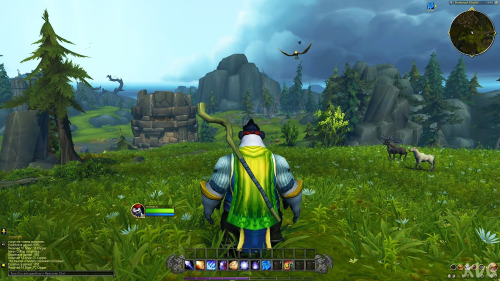
- Final Fantasy XIV 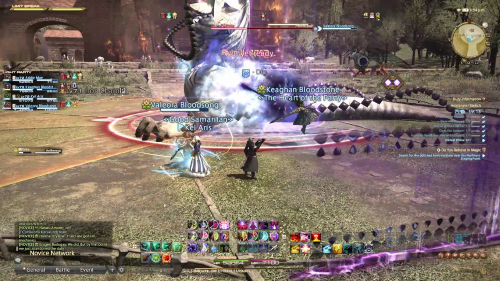
- EverQuest 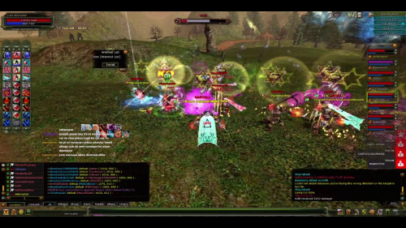
Sandbox/Open World
A sandbox game is a video game with a gameplay element that provides players a great degree of creativity to interact with, usually without any predetermined goal, or with a goal that the players set for themselves. Such games may lack any objective, and are sometimes referred to as non-games or software toys. More often, sandbox games result from these creative elements being incorporated into other genres and allowing for emergent gameplay. Sandbox games are often associated with an open world concept which gives the players freedom of movement and progression in the game's world. The term "sandbox" derives from the nature of a sandbox that lets people create nearly anything they want within it.
Early sandbox games came out of space trading and combat games like Elite (1984) and city-building simulations and tycoon games like SimCity (1989). The releases of The Sims and Grand Theft Auto III in 2000 and 2001, respectively, demonstrated that games with highly detailed interacting systems that encouraged player experimentation could also be seen as sandbox games. Sandbox games also found ground with the ability to interact socially and share user-generated content across the Internet like Second Life (2003). More notable sandbox games include Garry's Mod (2006) and Dreams (2020), where players use the game's systems to create environments and modes to play with. Minecraft (2011) is the most successful example of a sandbox game, with players able to enjoy both creative modes and more goal-driven survival modes. Roblox (2006) offers a chance for everyone to create their own game by using the Roblox Lua programming language. It allows adding effects, setting up functions, testing games, etc.[1] Fortnite (2017) has game modes which allow players to either fight one another, fight off monsters, create their own battle arenas, race their friends, or jam out to popular songs with instruments.
From a video game development standpoint, a sandbox game incorporates elements of sandbox design, a range of game systems that encourage free play.[2] Sandbox design can either describe a game or a game mode, with an emphasis on free-form gameplay, relaxed rules, and minimal goals. Sandbox design can also describe a type of game development where a designer slowly adds features to a minimal game experience, experimenting with each element one at a time.[3] There are "a lot of varieties" of sandbox design, based on "a wide range of dynamic interactive elements".[2] Thus, the term is used often, without a strict definition.[4] Game designers sometimes define a sandbox as what it is not, where a game can "subtract the missions, the main campaign, the narrative or whatever formatively binds the game's progression, and you have a sandbox."
Examples:
- Minecraft 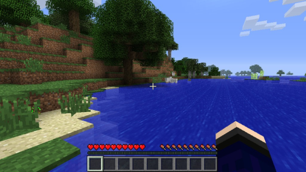
- Garry's Mod 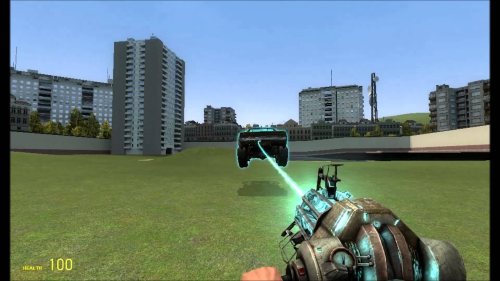
- No Man's Sky 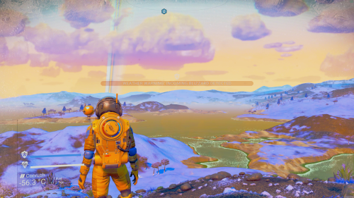
Survival
Survival games are a subgenre of action games which are often set in hostile, intense, open-world environments. Players generally start with minimal equipment and are required to survive as long as possible by finding the resources necessary to manage hunger, thirst, disease and/or mental state. Many survival games are based on randomly or procedurally generated persistent environments; more recently, survival games are often playable online, allowing players to interact in a single world. Survival games are generally open-ended with no set goals and often closely related to the survival horror genre, where the player must survive within a supernatural setting, such as a zombie apocalypse.
Survival games are considered an extension of a common video game theme where the player character is stranded or separated from others and must work alone to survive and complete a goal. Survival games focus on the survival parts of these games, while encouraging exploration of an open world.[1] Some gameplay elements present in the action-adventure genre—such as resource management and item crafting—are commonly found in survival games and serve as central elements featured in games like Survival Kids. At the start of a typical survival game, the player is placed alone in the game's world with few resources. It is not uncommon for players to spend the majority or entirety of the game without encountering a friendly non-player character; since NPCs are typically hostile to the player, the emphasis is placed on avoidance, rather than confrontation. In some games, however, combat is unavoidable and provides the player with valuable resources (e.g., food, weapons, and armor).
In some games, the world is generated randomly so that the player must actively search for food and weapons, often provided with visual and auditory cues of the types of resources that may be found nearby.[2] The player character typically has a health bar and will take damage from falling, starving, drowning, contact with fire or harmful substances, and attacks by monsters that inhabit the world. Other metrics related to the player-character's vulnerability to the game world may also come into play.[3] For example, the survival game, Don't Starve, features a separate hunger gauge and a sanity meter, which will cause the death of the character if allowed to deplete. Character death may not be the end of the game, however – the player may be able to respawn and return to the game location at which their character died in order to retrieve lost equipment. Other survival games use permadeath: the character has one life, and dying requires that the game be restarted.[2] While many survival games are aimed at constantly putting the player at risk from hostile creatures or the environment, others may downplay the amount of danger the player faces and instead encourage more open-world gameplay, where player character death can still occur if the player is not careful or properly equipped.
Examples:
- Ark: Survival Evolved 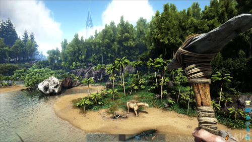
- The Forest 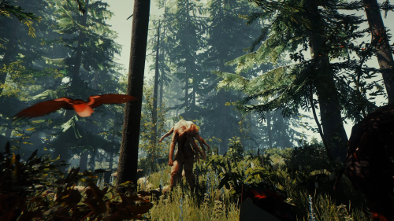
- Valheim 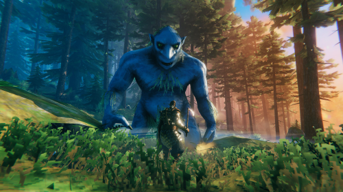